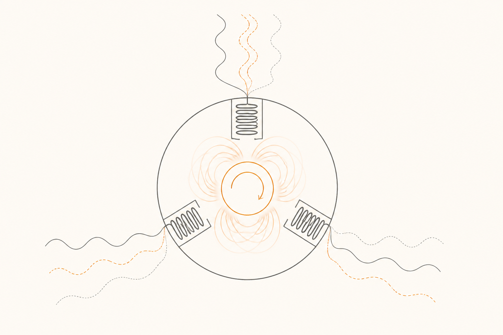

Inversor y motor eléctrico: trifásico sin trauma
El motor eléctrico es la pieza más simple y a la vez la más asombrosa del coche. Una sola parte gira. No hay pistones, ni cigüeñal, ni cambio de marchas. Y sin embargo es capaz de pasar de cero a velocidad de autopista en segundos, con una suavidad que ningún motor de combustión puede igualar. Detrás de ese gesto hay un viejo truco eléctrico — el campo magnético giratorio — y un acompañante imprescindible: el inversor.
El truco que hace girar todo
El motor eléctrico funciona gracias a una propiedad básica: una corriente eléctrica que pasa por una bobina genera un campo magnético. Si rodeas un núcleo de hierro con un alambre y haces pasar electricidad, ese núcleo se vuelve un imán mientras pasa la corriente.
Ahora imagina que pones tres bobinas distintas formando un círculo, separadas 120 grados (como las tres patas de una mesa de bar). En el centro del círculo, montas un eje libre que puede girar. Si haces pasar corriente por las tres bobinas en momentos distintos — primero la de arriba, luego la de la derecha, luego la de la izquierda, y vuelta a empezar muy rápido —, el "norte magnético" del conjunto va saltando de una bobina a otra, dando vueltas alrededor del centro. Lo que tienes es un campo magnético giratorio: como si un imán invisible diera vueltas alrededor del eje.
Pon ahora en el centro de ese círculo un imán (o algo que se comporte como tal). El campo giratorio lo arrastra. El eje gira. Le pones una rueda. La rueda se mueve. Ya tienes un coche.

Lo que aporta el inversor
Para que las tres bobinas reciban sus tres ondas desfasadas hace falta una fuente que las produzca. La batería no sirve directamente: entrega DC, una corriente plana sin variaciones. Hace falta una pieza que fabrique AC trifásica a partir de DC. Esa pieza es el inversor.
Conmutando los semiconductores que vimos en la píldora anterior miles de veces por segundo, el inversor produce tres ondas senoidales, una por cada bobina, con un desfase de 120 grados entre ellas. Y aquí está la magia: puede cambiar la frecuencia y la amplitud de esas ondas en tiempo real. Si quieres que el motor gire más rápido, sube la frecuencia. Si quieres más par (más fuerza de giro), sube la amplitud. Es lo que hace el ordenador del coche cuando aprietas el acelerador: pedir al inversor más frecuencia, más amplitud, o ambas.
Esa es la razón por la que un coche eléctrico no necesita caja de cambios. Un motor de gasolina solo da par útil en un rango estrecho de revoluciones, y por eso necesita marchas que multipliquen su giro a distintas relaciones. Un motor eléctrico, gracias al inversor, puede entregar par desde cero revoluciones hasta sus revoluciones máximas. Una sola "marcha" cubre todo el rango. Por eso aceleras pisando, sin sentir cambios.
Dos familias de motor
Casi todos los motores de coche eléctrico hoy son una de dos familias. Hacen lo mismo conceptualmente, pero el rotor está hecho distinto.
Síncrono de imanes permanentes (PMSM)
Cómo es. El rotor lleva imanes potentes (de tierras raras como neodimio).
Pro. Más eficiente, más compacto, mejor en rangos típicos de conducción urbana e interurbana.
Contra. Imanes caros y geopolíticamente sensibles (gran parte del neodimio viene de pocos países). Pierde algo de eficiencia a altísima velocidad.
Asíncrono de inducción (ASM)
Cómo es. El rotor no lleva imanes: es una "jaula" metálica que se magnetiza al ser atravesada por el campo del estator.
Pro. Más barato, sin tierras raras, mejor a velocidades sostenidas altas.
Contra. Algo menos eficiente en uso urbano y un poco más voluminoso para la misma potencia.
Muchos coches con dos motores combinan ambos tipos: un PMSM atrás (eficiente para conducción normal) y un ASM delante (ligero, se desconecta cuando no hace falta, y aporta empuje extra al acelerar). Es una decisión de ingeniería pragmática: cada motor donde rinde mejor.
Por qué un coche eléctrico es tan rápido al arrancar
Un motor de gasolina necesita girar (revolucionar) para entregar par. Cuando arranca desde parado, está prácticamente sin par y por eso necesita un embrague o un convertidor de par para pasar la energía al eje.
Un motor eléctrico hace lo contrario: entrega par máximo desde 0 rpm. Aprietas el acelerador y todo el empuje disponible está ahí ya, en el primer instante. No hay que esperar a que el motor "coja vueltas". Por eso un coche eléctrico modesto ya se siente más vivo en ciudad que un gasolina parecido — y por eso un eléctrico potente acelera de forma que parece desafiar la física.
El inversor también ayuda en sentido contrario: como controla con precisión la corriente que entra al motor, modula la entrega de par con una finura imposible en mecánica. Por eso el control de tracción de un eléctrico es más rápido y preciso que el de un coche tradicional, y por eso los coches eléctricos suelen ir muy bien en superficies resbaladizas: el sistema reacciona en milisegundos.
Eficiencia que sorprende
Un buen motor eléctrico convierte entre el 90% y el 95% de la energía eléctrica que recibe en movimiento. Un motor de combustión raramente pasa del 35-40% en condiciones óptimas, y cae al 20% en uso urbano normal.
Esto explica por qué un coche eléctrico, aunque arrastre cientos de kilos de batería, gasta tan poca energía por kilómetro: gran parte de lo que sale de la batería llega a la rueda, sin tirarse por el escape como calor. Es un cambio de paradigma. Y es también la base de la siguiente píldora: si el motor convierte tan eficientemente electricidad en movimiento, también puede hacer lo contrario — convertir movimiento en electricidad cuando frenas.
Fácil¿Por qué se llama "trifásica" la corriente que recibe un motor de coche eléctrico?
Porque son tres ondas eléctricas distintas (una por cada bobina del estator), desfasadas 120 grados entre sí. La combinación de las tres crea un campo magnético que gira alrededor del rotor. Cada una de esas ondas se llama "fase" — de ahí "trifásica".
Fácil¿Por qué un coche eléctrico no necesita caja de cambios?
Porque el inversor ajusta la frecuencia y la amplitud de la corriente trifásica en tiempo real, lo que permite al motor entregar par útil desde 0 rpm hasta sus revoluciones máximas con una sola "marcha". El motor de gasolina solo da par útil en un rango estrecho y por eso necesita varias marchas para cubrir todo el rango de uso.
Medio¿Cuál es la diferencia esencial entre un motor síncrono de imanes permanentes y uno asíncrono de inducción?
Cómo se magnetiza el rotor. El síncrono lleva imanes permanentes incrustados en el rotor (de neodimio u otros materiales raros), por lo que su magnetismo está siempre presente. El asíncrono no lleva imanes: el rotor es una jaula metálica que se magnetiza solo cuando el campo del estator lo atraviesa. Diferencia práctica: los síncronos son más eficientes en uso típico pero usan materiales caros; los asíncronos son más baratos y robustos pero algo menos eficientes.
Difícil¿Por qué la eficiencia de un motor eléctrico (90-95%) es muy superior a la de un motor de combustión (20-40%)?
Porque el motor eléctrico no quema nada. La energía pasa de eléctrica a mecánica casi directamente, con pérdidas pequeñas en forma de calor por la resistencia de las bobinas y la fricción de los rodamientos. El motor de combustión, en cambio, transforma calor en movimiento, y la termodinámica le impone un límite teórico (ciclo de Carnot) muy por debajo del 100%. Además gran parte del calor del combustible se pierde por el escape, por la refrigeración y por la fricción interna de cientos de piezas en movimiento. Por eso el coche eléctrico, aun con la batería pesada, gasta menos energía por kilómetro recorrido.